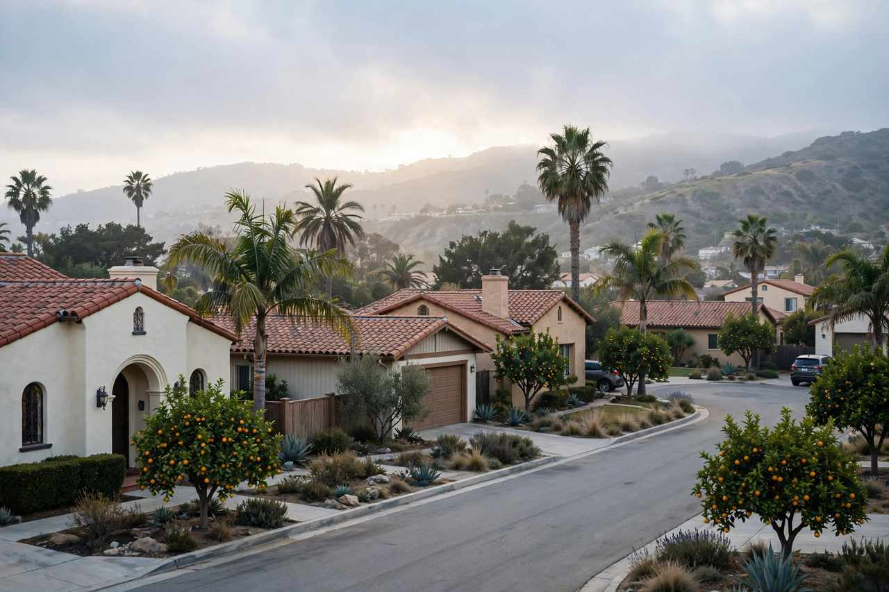

Rodent Control · Magalia, CA
Fast Rodent Control in Magalia, CA
If rodents have moved into your Magalia home or business, Murvo can help today. Our local, licensed crews provide same-day inspection, targeted removal, durable exclusion, and cleanup, all under one flat-rate written quote with a written guarantee. No hourly billing and no surprise add-ons, just rodent specialists serving Magalia and communities throughout Butte County every day of the week. Service covers 1 ZIP codes across Butte County, including 95954, with same-day appointments where schedules allow.
24/7Availability
1ZIP codes covered
Same-dayResponse
Licensed · Upfront options · Written guarantees · Fully insured
Magalia at a glance
Local Rodent Control for Magalia, CA.
Butte County
Countynorthwest California
RegionChico · 12 mi
Nearest metro86 miles north of Sacramento
From Sacramento1
ZIP codes covered Service by service in Magalia
Rodent Control Services Available in Magalia
Thirty rodent services, one local standard in Magalia: inspection-led, exclusion-first, and quoted in writing before work begins. Browse the full list for Butte County below - each section explains what the service involves here, what it typically costs nationally, and how fast we can start.
- 01Rodent Control↗
- 02Rodent Inspection↗
- 03Rodent Removal↗
- 04Rodent Exclusion↗
- 05Rodent Proofing↗
- 06Rat Control↗
- 07Mice Control↗
- 08Mouse Removal↗
- 09Rat Removal↗
- 10Rodent Trapping↗
- 11Rodent Baiting↗
- 12Rodenticide Application↗
- 13Attic Rodent Removal↗
- 14Crawl Space Rodent Removal↗
- 15Wall Rodent Removal↗
- 16Kitchen Rodent Control↗
- 17Garage Rodent Control↗
- 18Commercial Rodent Control↗
- 19Residential Rodent Control↗
- 20Emergency Rodent Removal↗
- 21Same-Day Rodent Control↗
- 22Rodent Damage Repair↗
- 23Rodent Waste Cleanup↗
- 24Rodent Disinfection↗
- 25Rodent Odor Removal↗
- 26Dead Rodent Removal↗
- 27Rodent Dropping Cleanup↗
- 28Rodent Exclusion for Roofs↗
- 29Rodent Exclusion for Vents↗
- 30Rodent Exclusion for Chimneys↗
Rodent Control in Magalia
Rodent Control in Magalia
Most Magalia calls start with a sound nobody can place, then droppings confirm what the noise suggested. Murvo treats rodent control as a sequence, not a single visit: find the species, clear what is inside, close what let it in. Before any work begins, you approve a flat-rate written quote.
Homeowners in Magalia call Murvo for rodent control because the problem here is specific: Roof rat (Rattus rattus) pressure around bungalows and ranch homes, Victorians and stucco row homes, hillside homes, and suburban homes near canyons and open space, tight access at rooflines, eaves and attic vents, crawlspace and raised-foundation gaps, and garage door seals, and activity that follows the local season. Our Butte County crews diagnose the real source before recommending work, explain the options in plain language, and quote one flat rate in writing. Across Magalia - including Paradise, Concow - every visit is backed by licensed, insured technicians and our written workmanship guarantee. The Magalia crews who handle rodent control also handle the follow-through - proofing, cleanup, and monitoring - so one visit can close the whole problem.
The pattern in Butte County is predictable, so the response should be methodical. First comes identification, because Roof rat (Rattus rattus) and House mouse (Mus musculus) nest and feed in different places. Traps then go where travel is proven, not where it is convenient, and catches are logged by location. Sealing follows only after activity drops, using materials matched to each opening. Finally, monitoring stays in place long enough to catch a late survivor or a new arrival, and those readings decide when the program closes. That discipline is what turns a busy first week into a genuinely quiet second month for the household.
After you book, we confirm a time window and your background-checked technician arrives in a marked vehicle with identification. They walk the property with you, inspect inside and out, and explain what they find with photos. You receive a flat-rate written quote before any work starts. Once approved, trapping and sealing begin, and follow-up visits are scheduled before we leave, with the guarantee in writing. No work begins without your approval.
Need help quickly in Magalia? Call any time — the emergency line is staffed 24/7, and same-day rodent control appointments are available in most areas. We inspect first, explain the plan in plain language, and put the flat rate in writing before work starts. A Magalia inspection confirms it on site - dropping size, gnaw marks, and entry points tell the story quickly.
The honest answer is that it depends on species, activity level, and how much sealing your home needs, which is why Murvo inspects first and then gives you a flat-rate quote in writing. For national context only, Angi's 2026 data averages rat and mouse removal and control at $396, typically $189 to $655; that is not a Murvo price, and your written quote is the figure you pay.
Rodent Inspection in Magalia
Rodent Inspection in Magalia
You do not need to see a rodent to have a rodent problem in Magalia. Droppings in the attic, gnaw marks near rooflines, eaves and attic vents, crawlspace and raised-foundation gaps, and garage door seals, or noises after dark are enough reason to book a rodent inspection. Murvo technicians check the whole property, photograph what they find, and give you a prioritized plan plus a flat-rate written quote for any work recommended.
Homeowners in Magalia call Murvo for rodent inspection because the problem here is specific: Roof rat (Rattus rattus) pressure around bungalows and ranch homes, Victorians and stucco row homes, hillside homes, and suburban homes near canyons and open space, tight access at rooflines, eaves and attic vents, crawlspace and raised-foundation gaps, and garage door seals, and activity that follows the local season. Our Butte County crews diagnose the real source before recommending work, explain the options in plain language, and quote one flat rate in writing. Across Magalia - including Paradise, Concow - every visit is backed by licensed, insured technicians and our written workmanship guarantee. The Magalia crews who handle rodent inspection also handle the follow-through - proofing, cleanup, and monitoring - so one visit can close the whole problem.
Timing often tells the story first. The written report that follows ranks repairs clearly, so decisions rest on findings rather than guesswork or pressure. Noises at dusk suggest one pattern; droppings near stored food suggest another. Technicians use what you report to focus the search, then verify it against physical evidence throughout bungalows and ranch homes, Victorians and stucco row homes, hillside homes, and suburban homes near canyons and open space. They check wiring and insulation for damage, test whether gaps at rooflines, eaves and attic vents, crawlspace and raised-foundation gaps, and garage door seals are active, and mark each opening by size and species. Each recommendation in that report traces back to a photographed finding, keeping the whole assessment accountable.
Your part is simple: point out noises, droppings, and any past problems. Ours is everything else. A background-checked technician arrives on time, protects access areas, and inspects inside and out against a set checklist. Before leaving, you walk through the evidence together, discuss priorities, and decide what happens next, with no obligation attached. If you decide to proceed, those findings become the working plan, so no second survey is needed before approved repairs begin.
You do not have to wait days for answers in Magalia. Same-day rodent inspection appointments are available in most areas, urgent calls are taken 24/7, and most home inspections take under an hour. You finish the visit with photos, written findings, and flat-rate pricing for anything we recommend. A Magalia inspection confirms it on site - dropping size, gnaw marks, and entry points tell the story quickly.
Your exact rodent inspection price is confirmed before we visit, and any follow-up work is quoted as a flat rate in writing after the inspection — no hourly billing. For context, Angi's 2026 data puts a professional rodent inspection nationally at $100 to $200, often credited toward the job if you proceed.
Rodent Removal in Magalia
Rodent Removal in Magalia
Finding droppings in the kitchen or hearing scratching overhead in Magalia means rodents are already living indoors, and they will not leave on their own. Murvo's rodent removal clears active Roof rat (Rattus rattus) and House mouse (Mus musculus) with targeted trapping, removes animals hygienically, and closes the entry points behind them. One flat-rate written quote covers the program before work begins.
In Magalia, rodent removal is not a generic spray-and-go service. Rodents exploit rooflines, eaves and attic vents, crawlspace and raised-foundation gaps, and garage door seals in bungalows and ranch homes, Victorians and stucco row homes, hillside homes, and suburban homes near canyons and open space, and a fix that ignores those routes does not last. Murvo's Magalia team inspects first, shows you the evidence - droppings, gnaw marks, entry gaps - and then lays out the work with a flat-rate written quote. We serve all of Butte County from Magalia, including Paradise, Concow, and every job is covered by our written workmanship guarantee. Around Butte Creek Canyon, Cohasset, Yankee Hill, the pattern is similar: House mouse (Mus musculus) finds rooflines, eaves and attic vents, crawlspace and raised-foundation gaps, and garage door seals first, and lasting rodent removal has to close those routes.
Removal starts with an assessment of species, numbers, and access routes across attics, wall voids, garages, and kitchens. Removal is followed immediately by entry-point exclusion, because new rodents will replace removed ones through any gap left open, and disinfection is arranged after heavy activity. Once you approve the written quote, technicians set traps along proven runways, check them on schedule, and remove animals promptly and hygienically. Catch records show progress clearly instead of relying on guesswork. Photos document each stage for you.
Once removal is underway, expect short, predictable visits. When catches reach zero, monitoring confirms it, sealing is discussed, and the job closes with a walkthrough and your guarantee paperwork in hand before we leave. Your technician checks each mapped trap, removes catches hygienically, resets what is still needed, and updates the record with you. At close, prevention advice is tailored to what actually attracted rodents to your property, not copied from a generic checklist.
For active infestations in Magalia, rodent removal can usually start the same day you call, and our team answers 24/7 when a rodent is loose in a living area. The first visit confirms activity and sets traps straight away; return visits then clear and reset them until monitoring shows the property is completely clear. Around Magalia, bungalows and ranch homes, Victorians and stucco row homes, hillside homes, and suburban homes near canyons and open space give rodents the most cover, which is why entry points get checked before traps are set.
How many animals are active, which species they are, and how much sealing follows removal all shape the price, so we assess first and then quote one flat rate in writing. Angi's 2026 national context — an average of $396 and a typical $189 to $655 range for rat and mouse removal — is provided for comparison only; your written quote is the exact Murvo figure.
Rodent Exclusion in Magalia
Rodent Exclusion in Magalia
Rats can pass through a hole the size of a quarter, and mice through one far smaller, which is why bungalows and ranch homes, Victorians and stucco row homes, hillside homes, and suburban homes near canyons and open space in Magalia hide so many working entry points around rooflines, eaves and attic vents, crawlspace and raised-foundation gaps, and garage door seals. Our technicians inspect soffits, eaves, pipe entries, foundation cracks, and door sweeps in detail, then prioritize the openings that matter most for Roof rat (Rattus rattus) and House mouse (Mus musculus) locally.
Homeowners in Magalia call Murvo for rodent exclusion because the problem here is specific: Roof rat (Rattus rattus) pressure around bungalows and ranch homes, Victorians and stucco row homes, hillside homes, and suburban homes near canyons and open space, tight access at rooflines, eaves and attic vents, crawlspace and raised-foundation gaps, and garage door seals, and activity that follows the local season. Our Butte County crews diagnose the real source before recommending work, explain the options in plain language, and quote one flat rate in writing. Across Magalia - including Paradise, Concow - every visit is backed by licensed, insured technicians and our written workmanship guarantee. Seasonal timing matters for rodent exclusion in Magalia: rodents surge in Magalia from October through February.
Start with a hard rule: nothing gets sealed while animals remain inside. Each opening receives its own treatment, from packed copper mesh in irregular gaps to hardware cloth across vents and flashing at roof junctions. Door sweeps close the obvious routes, and smaller cracks receive durable sealant chosen for exterior exposure. Technicians confirm the home is clear through trapping and monitoring, then survey the structure junction by junction, because seams between materials open as buildings settle. A written inventory ties each photograph to a location, so future checks can revisit precisely the same points.
Before sealing day, confirm pets are secured and access to the roofline and foundation is clear. Afterwards you receive the photographs, the guarantee, and a date for the follow-up check that confirms everything is holding as intended. The crew then works through the agreed list, checks that no animals remain inside, and fits each seal cleanly. If monitoring ever finds fresh activity at a sealed point, that written inventory tells us exactly what to inspect first.
Rodent exclusion in Magalia usually starts with a survey visit we can often schedule the same day you call. Sealing itself is booked as soon as any active animals are cleared, because nothing is sealed inside. Most homes are fully sealed within days, not weeks, and urgent entry points near wiring or food areas are prioritized first. If you are seeing signs now, an inspection this week is the fastest way to know which situation you are in.
After the survey of your Magalia home, every opening that needs sealing is listed and priced as one flat-rate written quote, so you pay only for the work your property needs. For national context, Angi's 2026 data puts basic exclusion at $200 to $600 depending on access and the number of openings; that benchmark is not a Murvo price.
Rodent Proofing in Magalia
Rodent Proofing in Magalia
When is the right season for rodent proofing in Magalia? Before cold weather sends rodents searching for indoor warmth, though any quiet month works well. Our licensed, insured technicians harden the structure, advise on food storage and vegetation, and leave a seasonal re-check booked, all backed by a written workmanship guarantee.
In Magalia, rodent proofing is not a generic spray-and-go service. Rodents exploit rooflines, eaves and attic vents, crawlspace and raised-foundation gaps, and garage door seals in bungalows and ranch homes, Victorians and stucco row homes, hillside homes, and suburban homes near canyons and open space, and a fix that ignores those routes does not last. Murvo's Magalia team inspects first, shows you the evidence - droppings, gnaw marks, entry gaps - and then lays out the work with a flat-rate written quote. We serve all of Butte County from Magalia, including Paradise, Concow, and every job is covered by our written workmanship guarantee. The Magalia crews who handle rodent proofing also handle the follow-through - proofing, cleanup, and monitoring - so one visit can close the whole problem.
Proofing starts with a whole-property assessment inside and out, from overhanging branches and cluttered garages to unsealed vents and gaps under doors. Every item is prioritized so essential work happens first. The plan typically combines structural sealing of utility entries and foundation cracks with mesh screening on vents, chimneys, and rooflines, plus door sweeps where light shows underneath. We also address attractants: securing pet food and bird seed storage, trimming vegetation away from walls, and clearing harborage. Photos show each weakness we find.
After booking, we confirm your appointment and any access needs, such as gates or attic hatches. On the day, your background-checked technician completes the survey and agreed proofing work in one visit where possible. Before leaving, you walk the finished sealing together, receive care and storage advice, and confirm the guarantee. Later re-checks verify sweeps, screens, and seals are still holding. Nothing is added to your bill without approval first.
Proofing is planned work rather than an emergency, but you can still move fast: rodent proofing surveys in Magalia are often available the same day and always within a few days. Once you approve the plan, most work is finished in a single visit, ideally before colder weather drives rodents indoors. If you are seeing signs now, an inspection this week is the fastest way to know which situation you are in.
We survey your Magalia property first, separate the quick wins you can handle yourself from the specialist sealing, and quote the professional work as one flat rate in writing so spending can be staged. Angi's 2026 national context puts exclusion, the core of proofing, at $200 to $600 for basic work — a benchmark only, not a Murvo price.
Rat Control in Magalia
Rat Control in Magalia
In bungalows and ranch homes, Victorians and stucco row homes, hillside homes, and suburban homes near canyons and open space, rats exploit structure and routine together, traveling fences and pipes to reach food near rooflines, eaves and attic vents, crawlspace and raised-foundation gaps, and garage door seals. Our rat control across Butte County checks attics, basements, drains, and outbuildings as one connected system, because treating a single room while harborage survives elsewhere simply moves the problem around the property.
Homeowners in Magalia call Murvo for rat control because the problem here is specific: Roof rat (Rattus rattus) pressure around bungalows and ranch homes, Victorians and stucco row homes, hillside homes, and suburban homes near canyons and open space, tight access at rooflines, eaves and attic vents, crawlspace and raised-foundation gaps, and garage door seals, and activity that follows the local season. Our Butte County crews diagnose the real source before recommending work, explain the options in plain language, and quote one flat rate in writing. Across Magalia - including Paradise, Concow - every visit is backed by licensed, insured technicians and our written workmanship guarantee. Seasonal timing matters for rat control in Magalia: rodents surge in Magalia from October through February.
Wary rats punish rushed trapping, so the program begins with patience. Catches are recorded by location, giving a clear picture of colony size and movement. Exclusion follows at rooflines and entry points, and monitoring devices remain in place afterwards to verify that quiet routes have genuinely stayed quiet. Unset traps are placed on confirmed runways and pre-baited until feeding becomes confident and regular. Only then are traps set, checked frequently, and repositioned as the pattern shifts. Counts matter here, because a falling catch trend tells a different story from a single lucky night.
Call for rat control in Magalia and we will book an inspection, often the same day for active problems. The job closes only when monitoring confirms rats are gone and exclusion is complete. Your technician maps routes and harborage, explains the trapping plan, and gives you a flat-rate written quote before any work begins. Trapping visits then run on a set schedule, with placements adjusted as activity shifts. Your guarantee is confirmed in writing.
Call day or night — urgent rat control calls in Magalia are answered 24/7, and a same-day inspection can usually start the program. Pre-baiting begins on that first visit once you approve the written quote, traps are set when rats are feeding confidently, and scheduled checks continue until activity stops. That is also why Murvo pairs removal with exclusion in Magalia - treating the animal without closing rooflines, eaves and attic vents, crawlspace and raised-foundation gaps, and garage door seals rarely lasts.
Rat work varies with species, colony size, and how many entry points need sealing, so Murvo inspects first and quotes one flat rate in writing. For national context only, Angi's 2026 data averages rat control and removal at $396, typically $189 to $655. That benchmark is not a Murvo price; the written quote for your Magalia home is the exact figure you pay.
Mice Control in Magalia
Mice Control in Magalia
One mouse seen in a Magalia kitchen usually means more are nesting unseen, and mice breed quickly enough that a small problem becomes a large one within weeks. Murvo offers same-day appointments where available, builds the program around trapping and sealing rather than baits, and backs the finished work with a written workmanship guarantee for lasting peace of mind.
In Magalia, mice control is not a generic spray-and-go service. Rodents exploit rooflines, eaves and attic vents, crawlspace and raised-foundation gaps, and garage door seals in bungalows and ranch homes, Victorians and stucco row homes, hillside homes, and suburban homes near canyons and open space, and a fix that ignores those routes does not last. Murvo's Magalia team inspects first, shows you the evidence - droppings, gnaw marks, entry gaps - and then lays out the work with a flat-rate written quote. We serve all of Butte County from Magalia, including Paradise, Concow, and every job is covered by our written workmanship guarantee. Coverage for mice control spans 1 ZIP codes in Butte County, including 95954.
The program starts with an activity and entry-point survey covering kitchens, attics, wall voids, and under-floor spaces. Traps are placed in clusters along baseboards, behind appliances, and in attic voids, because mice travel the same short routes nightly. Technicians return to clear and reset traps and track numbers until they reach zero. We then seal pencil-width gaps, including the overlooked routes behind baseboards and where pipes and wires pass through floors, and advise on cleaning scent-marked surfaces. Follow-up monitoring confirms the result before sign-off.
Book with one call and tell us which rooms show signs; same-day surveys are often possible. Your technician inspects kitchen, attic, and voids, explains the route map, and quotes in writing before traps are set. Check visits are scheduled immediately, and each one reports catches plainly until the final confirmation visit shows activity has stopped. The final confirmation matters, because mice can go quiet briefly while a nest remains, and monitoring distinguishes quiet from genuinely finished.
Mice multiply fast, so mice control in Magalia is built to start fast too: a survey can often be arranged the same day you call, with traps set on that first visit once the quote is approved. Because mice investigate new objects quickly, catches usually begin soon after, and check visits follow until a final confirmation shows activity has stopped. A Magalia inspection confirms it on site - dropping size, gnaw marks, and entry points tell the story quickly.
The number of rooms affected and the amount of sealing required set the price, so Murvo surveys first and quotes one flat rate in writing. For national context only, Angi's 2026 data averages rat and mouse control and removal at $396, typically $189 to $655 — not a Murvo price; your written quote is exact.
Mouse Removal in Magalia
Mouse Removal in Magalia
What does proper removal include beyond the traps themselves? Hygienic clearing of droppings and nesting, disinfection of affected cabinets, and sealing that stops the next mice using the same scent trails. Murvo delivers that complete finish with licensed, insured technicians and a written workmanship guarantee on the completed work.
In Magalia, mouse removal is not a generic spray-and-go service. Rodents exploit rooflines, eaves and attic vents, crawlspace and raised-foundation gaps, and garage door seals in bungalows and ranch homes, Victorians and stucco row homes, hillside homes, and suburban homes near canyons and open space, and a fix that ignores those routes does not last. Murvo's Magalia team inspects first, shows you the evidence - droppings, gnaw marks, entry gaps - and then lays out the work with a flat-rate written quote. We serve all of Butte County from Magalia, including Paradise, Concow, and every job is covered by our written workmanship guarantee. In Magalia, mouse removal calls most often involve bungalows and ranch homes, Victorians and stucco row homes, hillside homes, and suburban homes near canyons and open space, where rooflines, eaves and attic vents, crawlspace and raised-foundation gaps, and garage door seals decide whether the fix holds.
We start with a nest and feeding-area survey, checking attics, cabinets, under-floor voids, and behind kitchen units. Dead mice in inaccessible voids are located and dealt with before odor becomes a problem, and access points are then sealed as part of full exclusion. Technicians set multiple traps at proven activity points, return to clear and reset them, and track catch numbers until they fall to zero. All removed animals and contaminated material are bagged and taken away. Photos record progress at every visit.
Booking takes one call. Work begins only after you approve the written quote, and trap checks are booked ahead so nothing drifts. At sign-off we review catch records together, confirm sealing is complete, and leave you with guarantee paperwork and prevention advice. We agree a time window, and your background-checked technician arrives ready to survey attics, cabinets, and voids in one visit. Rooms are confirmed fully safe to use again.
For mice active in kitchens or living areas of your Magalia home, mouse removal can often begin the same day you call. That first visit surveys nesting sites and sets traps as soon as you approve the quote, and because mice investigate traps quickly, catches usually start fast. Return visits continue until numbers reach zero. That is also why Murvo pairs removal with exclusion in Magalia - treating the animal without closing rooflines, eaves and attic vents, crawlspace and raised-foundation gaps, and garage door seals rarely lasts.
Mouse removal cost reflects the number of rooms involved and how much sealing is needed, which is why Murvo surveys first and quotes a flat rate in writing. For national context only, Angi's 2026 data averages rat and mouse removal at $396, typically $189 to $655. That benchmark is not a Murvo price; your written quote covers your exact program.
Rat Removal in Magalia
Rat Removal in Magalia
In bungalows and ranch homes, Victorians and stucco row homes, hillside homes, and suburban homes near canyons and open space, where rats enter decides how removal unfolds. Roof-level access through rooflines, eaves and attic vents, crawlspace and raised-foundation gaps, and garage door seals points toward attic work; ground burrows suggest basements and drains across Butte County. Our licensed technicians trace the whole route for Roof rat (Rattus rattus) and House mouse (Mus musculus), remove the colony, and sanitize areas where nests contaminated insulation or stored items.
Homeowners in Magalia call Murvo for rat removal because the problem here is specific: Roof rat (Rattus rattus) pressure around bungalows and ranch homes, Victorians and stucco row homes, hillside homes, and suburban homes near canyons and open space, tight access at rooflines, eaves and attic vents, crawlspace and raised-foundation gaps, and garage door seals, and activity that follows the local season. Our Butte County crews diagnose the real source before recommending work, explain the options in plain language, and quote one flat rate in writing. Across Magalia - including Paradise, Concow - every visit is backed by licensed, insured technicians and our written workmanship guarantee. Seasonal timing matters for rat removal in Magalia: rodents surge in Magalia from October through February.
Removal stays trap-led and exclusion-backed throughout. Monitoring devices and a documented final walkthrough then prove activity has ended, and proofing advice covers drains, vents, and rooflines going forward. Locked bait stations appear only where a site genuinely justifies them, positioned away from pets and food, labeled, and monitored on schedule; loose bait is never used. After clearance, contaminated areas are sanitized carefully, with surfaces disinfected before cleaning and droppings never dry-swept. That written evidence stays with you, including the monitoring readings that supported the decision to sign off.
After booking, we confirm access needs for the attic, basement, or outbuildings so no time is wasted. Follow-up visits run on schedule until catches stop, then sealing and sanitation are completed. A final monitoring period confirms the home is clear before sign-off. On the first visit, your background-checked technician sets out the plan and begins pre-baiting once you approve the written quote. Progress is reported to you after every single visit.
In Magalia, rat removal can usually start the same day you call, with 24/7 answering for rats active in living areas. Pre-baiting begins on the first visit after you approve the written quote, and traps are set once rats feed confidently, typically within days. Repeat visits then run frequently until monitoring confirms the colony is gone. Around Magalia, bungalows and ranch homes, Victorians and stucco row homes, hillside homes, and suburban homes near canyons and open space give rodents the most cover, which is why entry points get checked before traps are set.
Colony size, access, and the sealing needed afterwards drive the price, so Murvo assesses the property first and quotes a flat rate in writing covering the full program. Angi's 2026 data, for national context only, averages rat removal at $396 and typically ranges from $189 to $655; that is a benchmark, not a Murvo price.
Rodent Trapping in Magalia
Rodent Trapping in Magalia
For Magalia households who want a poison-free route, trapping delivers measurable results without chemicals in the home. Each catch is recorded by location, building a picture of movement through bungalows and ranch homes, Victorians and stucco row homes, hillside homes, and suburban homes near canyons and open space via rooflines, eaves and attic vents, crawlspace and raised-foundation gaps, and garage door seals until numbers fall to zero. Murvo's licensed, insured technicians then recommend exclusion sealing and cleanup, and the whole program is backed by a written workmanship guarantee.
When you need rodent trapping in Magalia, the job starts with what is actually happening in your part of Butte County. Murvo crews work Magalia every week, so they know how Roof rat (Rattus rattus) and House mouse (Mus musculus) behave around bungalows and ranch homes, Victorians and stucco row homes, hillside homes, and suburban homes near canyons and open space here - and where they get in: rooflines, eaves and attic vents, crawlspace and raised-foundation gaps, and garage door seals. We arrive equipped for the full job, confirm the flat rate in writing before work begins, and cover the whole Magalia area, including Paradise, Concow. No call-center runaround and no open-ended hourly billing - just a local crew, a clear plan, and a written quote you approve first. The Magalia crews who handle rodent trapping also handle the follow-through - proofing, cleanup, and monitoring - so one visit can close the whole problem.
Trap selection covers snap traps for quick, humane dispatch, multi-catch devices for busy mouse routes, and live-capture options where you prefer release away from the home. Baits and lures are matched to species and location, and all devices are positioned with pet and child safety in mind and explained to your household. As catches fall, we recommend exclusion sealing, plus droppings cleanup for affected areas, moving the program from active trapping to monitoring and final sign-off. Every device location is mapped for you.
Book rodent trapping in Magalia and a technician can often start the same day. The first visit inspects, maps activity, and places or pre-baits traps; you approve a flat-rate written quote covering the program including check visits before we proceed. Scheduled returns clear and reset traps and share catch records with you. When numbers reach zero, we confirm monitoring is clear and discuss sealing. The finished program is guaranteed in writing.
In Magalia, a rodent trapping program can usually start the same day you call, with traps placed or pre-baiting begun on the first visit after you approve the quote. Mice often investigate within the first night, while wary rats need a few days of pre-baiting before traps are set. Scheduled checks then keep the program moving until numbers reach zero. Murvo's Magalia crews explain the finding either way, and the flat-rate quote leaves the decision with you.
Trapping is usually quoted as part of a complete removal program rather than by the trap, and the price depends on species, activity level, and how many check visits are needed. Murvo inspects first and quotes one flat rate in writing covering the program and its check visits, so there are no per-visit surprises and no hourly billing at any stage.
Rodent Baiting in Magalia
Rodent Baiting in Magalia
What rules govern bait near children, pets, and wildlife in California? Strict ones, and Murvo follows them plainly. California restricts anticoagulant rodenticides, and similar care applies everywhere: no loose bait, no open trays, no unmonitored stations. Before placement, you review locations, risks, and alternatives with a licensed technician.
When you need rodent baiting in Magalia, the job starts with what is actually happening in your part of Butte County. Murvo crews work Magalia every week, so they know how Roof rat (Rattus rattus) and House mouse (Mus musculus) behave around bungalows and ranch homes, Victorians and stucco row homes, hillside homes, and suburban homes near canyons and open space here - and where they get in: rooflines, eaves and attic vents, crawlspace and raised-foundation gaps, and garage door seals. We arrive equipped for the full job, confirm the flat rate in writing before work begins, and cover the whole Magalia area, including Paradise, Concow. No call-center runaround and no open-ended hourly billing - just a local crew, a clear plan, and a written quote you approve first. Seasonal timing matters for rodent baiting in Magalia: rodents surge in Magalia from October through February.
Baiting follows Inspect, Remove, Exclude, Clean, and Monitor, and it never stands alone. After a full inspection maps activity, background-checked technicians choose station locations along runways, fence lines, and entry points, away from pet play areas and food storage. Every station is tamper-resistant, locked, labeled, and anchored, with placement photographed for your records. We return on schedule to check consumption, record amounts, and adjust positions, and stations are removed when activity ends rather than left indefinitely. Loose bait is never used anywhere.
During monitoring, keep station areas undisturbed and tell us about any change in droppings or sightings. The program closes with stations out, sealing recommendations confirmed, and the full record, including photographs, left with you in writing. Your technician checks consumption on schedule, reports the trend plainly, and adjusts or removes stations as evidence dictates. If your household circumstances change, tell us; station locations and the wider plan can be reviewed and adjusted at the next check.
In Magalia, rodent baiting starts with an inspection visit we can often arrange the same day you call. Stations are only placed after activity is mapped and you approve the written quote and each location, so setup is deliberate rather than rushed. Monitoring visits then run on a fixed schedule until consumption stops and activity is confirmed clear. Around Magalia, bungalows and ranch homes, Victorians and stucco row homes, hillside homes, and suburban homes near canyons and open space give rodents the most cover, which is why entry points get checked before traps are set.
How many locked stations your property needs and how long monitoring runs determine the cost, so Murvo inspects and maps activity first, then quotes one flat rate in writing covering placement and scheduled checks. There are no per-visit surprises, and because the approach is exclusion-first, the aim is to reduce and eventually remove stations rather than maintain them forever.
Rodenticide Application in Magalia
Rodenticide Application in Magalia
What does the law in California allow, and what will you be told? California restricts anticoagulant rodenticides, other states set their own limits, and Murvo complies with all of them. You receive label and safety information for any product used at your Magalia property before application begins.
When you need rodenticide application in Magalia, the job starts with what is actually happening in your part of Butte County. Murvo crews work Magalia every week, so they know how Roof rat (Rattus rattus) and House mouse (Mus musculus) behave around bungalows and ranch homes, Victorians and stucco row homes, hillside homes, and suburban homes near canyons and open space here - and where they get in: rooflines, eaves and attic vents, crawlspace and raised-foundation gaps, and garage door seals. We arrive equipped for the full job, confirm the flat rate in writing before work begins, and cover the whole Magalia area, including Paradise, Concow. No call-center runaround and no open-ended hourly billing - just a local crew, a clear plan, and a written quote you approve first. Homes near Butte Creek Canyon tend to show activity first in Magalia, which is why inspections start with rooflines, eaves and attic vents, crawlspace and raised-foundation gaps, and garage door seals.
Monitoring data guides the whole treatment: whether it continues, changes product, or stops entirely in favor of proofing alone. We prioritize sealing entry points with exclusion and physical removal so dependence on chemical control shrinks visit by visit. Dead rodents are retrieved promptly where accessible, stations are kept away from pet and child areas, and every product used is documented with its label and safety information, so nothing applied at your property is ever hidden from you. State restrictions are checked before product selection.
After booking, we discuss children, pets, livestock, and wildlife at your property before the visit, so product decisions are informed from the start. Scheduled checks follow, amounts are recorded and reported, and stations are removed when activity is confirmed clear. On arrival, your background-checked technician inspects, talks you through the plan and label information, and only applies product once you approve the written quote. Safety information stays with you throughout the program.
No responsible rodenticide application starts without an inspection, and in Magalia that inspection can often be scheduled the same day you call. If treatment is justified and you approve the written quote, locked stations are installed on that visit. Monitoring then runs on schedule, and treatment stops as soon as the data shows activity has ended. Murvo's Magalia crews explain the finding either way, and the flat-rate quote leaves the decision with you.
Station numbers, the product permitted under California rules, and the length of monitoring all shape the price. Murvo inspects first, explains whether trapping or exclusion could avoid chemical control entirely, and then quotes one flat rate in writing before work begins. That quote covers scheduled monitoring visits, so there are no per-visit surprises later.
Attic Rodent Removal in Magalia
Attic Rodent Removal in Magalia
Attics offer rodents warmth, quiet nesting material, and insulation to contaminate, and in bungalows and ranch homes, Victorians and stucco row homes, hillside homes, and suburban homes near canyons and open space across Magalia they are reached through rooflines, eaves and attic vents, crawlspace and raised-foundation gaps, and garage door seals long before anyone notices. Our technicians photograph what they find inside, check for young, nests, and secondary entry points in adjoining crawl spaces, and clear the space before arranging cleanup and disinfection where contamination is present.
Homeowners in Magalia call Murvo for attic rodent removal because the problem here is specific: Roof rat (Rattus rattus) pressure around bungalows and ranch homes, Victorians and stucco row homes, hillside homes, and suburban homes near canyons and open space, tight access at rooflines, eaves and attic vents, crawlspace and raised-foundation gaps, and garage door seals, and activity that follows the local season. Our Butte County crews diagnose the real source before recommending work, explain the options in plain language, and quote one flat rate in writing. Across Magalia - including Paradise, Concow - every visit is backed by licensed, insured technicians and our written workmanship guarantee. Coverage for attic rodent removal spans 1 ZIP codes in Butte County, including 95954.
Cleanup overhead demands care. Contaminated insulation is assessed honestly, with repair referrals where replacement is warranted. Poison is avoided in attics deliberately, since animals dying in inaccessible corners create odor and retrieval problems. Adjoining crawl spaces are checked before the job is signed off as complete. Droppings and nesting material are never dry-swept, because that can spread contamination into the air; surfaces are disinfected first, then waste is removed hygienically by technicians in protective equipment. The result is a documented attic: cleared, sealed, cleaned where needed, and verified quiet before closure.
Book an attic visit, same-day where wiring damage or heavy activity makes it urgent. Trapping starts after approval, follow-up checks are booked ahead, and sealing plus cleanup complete the sequence before monitoring confirms the result. Your technician inspects overhead and along the roofline, shows you photographs of the evidence, and confirms the written quote. Wiring or insulation concerns are flagged separately in writing, so you can arrange any specialist repairs with clear information in hand.
In Magalia, attic rodent removal visits are often available the same day, and we prioritize attics where chewed wiring creates a fire risk. Trapping starts on the first visit after you approve the written quote, checks run on schedule, and most attics are cleared and sealed within days, with monitoring left briefly to confirm nothing remains inside. The written quote for your Magalia property will spell out exactly which of these applies before any work starts.
Attic costs depend on how many animals are active, how much sealing the roofline needs, and whether contaminated insulation requires cleanup, so Murvo inspects first and quotes one flat rate in writing. That quote covers the removal program described, with cleanup options priced separately in writing before you decide, so there are no surprises once work is underway.
Crawl Space Rodent Removal in Magalia
Crawl Space Rodent Removal in Magalia
Most Magalia crawl-space problems surface indirectly: a smell through the floorboards, a torn vapor barrier, droppings found during unrelated repairs. Murvo inspects beneath the home, traps active animals there, and seals vents and foundation gaps. One flat-rate written quote is agreed before trapping starts below.
Homeowners in Magalia call Murvo for crawl space rodent removal because the problem here is specific: Roof rat (Rattus rattus) pressure around bungalows and ranch homes, Victorians and stucco row homes, hillside homes, and suburban homes near canyons and open space, tight access at rooflines, eaves and attic vents, crawlspace and raised-foundation gaps, and garage door seals, and activity that follows the local season. Our Butte County crews diagnose the real source before recommending work, explain the options in plain language, and quote one flat rate in writing. Across Magalia - including Paradise, Concow - every visit is backed by licensed, insured technicians and our written workmanship guarantee. Homes near Butte Creek Canyon tend to show activity first in Magalia, which is why inspections start with rooflines, eaves and attic vents, crawlspace and raised-foundation gaps, and garage door seals.
Cleanup beneath a home follows careful practice throughout. Photographs of every finished seal accompany your guarantee paperwork, creating a record of exactly what was closed. Droppings and nesting debris are never dry-swept, since disturbing them can spread contamination; surfaces are disinfected first, then waste is bagged and removed by technicians wearing protective equipment. Technicians also trace connections upward through wall voids, checking whether activity reaches the attic, and report moisture issues with practical recommendations. Vent and pier sealing is checked from inside the space, not assumed sound from a glance outside.
Schedule an under-home inspection, usually within days and sooner when odors reach living areas. Clearance, vent screening, and cleanup then follow in sequence, with monitoring left in place until the space below is confirmed quiet. Your technician photographs conditions below, explains findings in plain language, and confirms the written quote before any trapping. Photographs from below the home accompany the final paperwork, which is especially useful because few homeowners ever see that space themselves.
In Magalia, crawl space rodent removal inspections can usually be arranged within a few days, and sooner where odors are drifting into living areas or activity sounds heavy. Trapping starts on the first visit after you approve the written quote, and clearance plus sealing follow in sequence, with monitoring left in place until the space below is confirmed quiet. Around Magalia, bungalows and ranch homes, Victorians and stucco row homes, hillside homes, and suburban homes near canyons and open space give rodents the most cover, which is why entry points get checked before traps are set.
Crawl-space costs depend on access, how many vents and gaps need sealing, and whether waste cleanup is required, so Murvo inspects first and quotes one flat rate in writing. If extra vents need sealing within the agreed scope, there are no surprises, and cleanup options are priced in writing before you decide whether to include them.
Wall Rodent Removal in Magalia
Wall Rodent Removal in Magalia
Most Magalia wall calls start at night, when scratching behind the drywall makes sleep impossible. Murvo locates the activity by listening, tracing entry routes, and using inspection cameras where access allows, then traps at void access points. A flat-rate written quote comes before any access work is considered.
When you need wall rodent removal in Magalia, the job starts with what is actually happening in your part of Butte County. Murvo crews work Magalia every week, so they know how Roof rat (Rattus rattus) and House mouse (Mus musculus) behave around bungalows and ranch homes, Victorians and stucco row homes, hillside homes, and suburban homes near canyons and open space here - and where they get in: rooflines, eaves and attic vents, crawlspace and raised-foundation gaps, and garage door seals. We arrive equipped for the full job, confirm the flat rate in writing before work begins, and cover the whole Magalia area, including Paradise, Concow. No call-center runaround and no open-ended hourly billing - just a local crew, a clear plan, and a written quote you approve first. Around Butte Creek Canyon, Cohasset, Yankee Hill, the pattern is similar: House mouse (Mus musculus) finds rooflines, eaves and attic vents, crawlspace and raised-foundation gaps, and garage door seals first, and lasting wall rodent removal has to close those routes.
Once the void is clear, we apply proofing to wall entry routes, sealing baseboard and pipe gaps linked to kitchen activity so the route cannot reopen. If a rodent has died in the wall, retrieval is followed by sanitation: contaminated material is never dry-swept, surfaces are disinfected first following CDC guidance, and odor treatment is applied so other rodents are not attracted back. Monitoring at key access points then confirms the void stays quiet. Connected voids are checked before we finish.
Book wall rodent removal in Magalia and we will schedule a locating visit, often the same day for loud or persistent wall noise. Your technician traces the activity, explains exactly where the animal is traveling, and confirms a flat-rate written quote before any access work, so wall work never becomes an open-ended bill. Trapping and any agreed access follow, then sealing, sanitation, and monitoring complete the job. Your written guarantee covers the completed work.
Persistent wall scratching in Magalia often qualifies for a same-day locating visit, especially when it is keeping you awake. On that first visit, once you approve the written quote, traps are set at void access points; because rodents travel the void nightly, results usually follow within days. Quiet-wall checks confirm the silence before we sign off. Murvo's Magalia crews explain the finding either way, and the flat-rate quote leaves the decision with you.
Wall work pricing depends on how precisely activity can be located and whether a minimal access cut is needed, which is why Murvo locates the activity first and quotes a flat rate in writing. That way wall access work never becomes an open-ended bill, and the quote covers the trapping, sealing, and monitoring described in your plan.
Kitchen Rodent Control in Magalia
Kitchen Rodent Control in Magalia
You wipe the counters, yet droppings keep appearing by morning. That pattern points to rodents moving through wall voids and cabinet voids while the house sleeps. Our kitchen rodent control in Magalia tracks those routes, removes the animals away from food surfaces, and seals the openings so the cycle finally stops for good.
In Magalia, kitchen rodent control is not a generic spray-and-go service. Rodents exploit rooflines, eaves and attic vents, crawlspace and raised-foundation gaps, and garage door seals in bungalows and ranch homes, Victorians and stucco row homes, hillside homes, and suburban homes near canyons and open space, and a fix that ignores those routes does not last. Murvo's Magalia team inspects first, shows you the evidence - droppings, gnaw marks, entry gaps - and then lays out the work with a flat-rate written quote. We serve all of Butte County from Magalia, including Paradise, Concow, and every job is covered by our written workmanship guarantee. Homes near Butte Creek Canyon tend to show activity first in Magalia, which is why inspections start with rooflines, eaves and attic vents, crawlspace and raised-foundation gaps, and garage door seals.
In tricky cases we use nighttime trail cameras to pinpoint exactly which gap a cautious mouse is traveling through. Everything follows integrated pest management: remove the animals, block the routes, take away the food and water drawing them in. That combination, rather than a single treatment, is what keeps kitchens in Magalia rodent-free. The process combines targeted trapping, sealing of pipe, cabinet and kickboard gaps, disinfection guidance for contaminated food areas, and follow-up monitoring visits. The same careful standard applies on every single visit.
After you book, a licensed, background-checked Murvo technician arrives at the agreed time and inspects behind appliances, sinks and cabinets. You receive a flat-rate written quote before anything starts. Once approved, trapping and sealing go ahead, contaminated areas are disinfected, and we explain the hygiene notes for your layout. Follow-up monitoring continues until kitchen activity stops, and the work is backed by our written workmanship guarantee. You stay informed at every stage of the work.
You can reach us by phone 24/7, and reports of droppings close to food preparation surfaces are given priority when we schedule. A same-day visit in Magalia may be possible in many cases, depending on technician availability. When you call, tell us what you found and we will offer the earliest appointment available. The written quote for your Magalia property will spell out exactly which of these applies before any work starts.
For national context, Angi's 2026 figures put rat extermination at $189-$655, averaging $396, but those figures are not Murvo prices. What your kitchen needs — trapping, sealing and follow-up monitoring — is assessed on site first. Murvo then provides one flat-rate written quote with no hourly billing, and work only begins after you approve it.
Garage Rodent Control in Magalia
Garage Rodent Control in Magalia
Garages give Roof rat (Rattus rattus) and House mouse (Mus musculus) shelter, stored food and a quiet route into the house, especially through gaps under the door. Our garage rodent control in Magalia removes rodents, seals door and wall entry points, and protects stored belongings, vehicles and wiring from gnaw damage. That is the standard Murvo works to in California.
When you need garage rodent control in Magalia, the job starts with what is actually happening in your part of Butte County. Murvo crews work Magalia every week, so they know how Roof rat (Rattus rattus) and House mouse (Mus musculus) behave around bungalows and ranch homes, Victorians and stucco row homes, hillside homes, and suburban homes near canyons and open space here - and where they get in: rooflines, eaves and attic vents, crawlspace and raised-foundation gaps, and garage door seals. We arrive equipped for the full job, confirm the flat rate in writing before work begins, and cover the whole Magalia area, including Paradise, Concow. No call-center runaround and no open-ended hourly billing - just a local crew, a clear plan, and a written quote you approve first. In Magalia, garage rodent control calls most often involve bungalows and ranch homes, Victorians and stucco row homes, hillside homes, and suburban homes near canyons and open space, where rooflines, eaves and attic vents, crawlspace and raised-foundation gaps, and garage door seals decide whether the fix holds.
Consider how a garage is actually used: bikes, bins, freezers and seasonal boxes all create hiding places. Removal follows the evidence we find. Then proofing closes wall gaps, vents and door edges, while damaged nesting material is cleared away. Our inspection moves zone by zone through that layout, noting food sources and the holes where cables or pipes cross into living areas. We also check connected rooms, since garage activity rarely stays contained, and schedule follow-up monitoring to confirm the whole route has shut down.
Booking is one call. When monitoring shows the garage is clear, we close the job, with the guarantee in writing. On arrival we inspect first, explain what we found in plain language, and give one written flat-rate price for the whole plan. Traps are set, entry points sealed and contaminated material dealt with safely. Follow-up visits check activity levels and adjust the plan if rodents are still moving. Questions are answered honestly throughout, with findings in writing.
Our phones are answered 24/7, and garages with active nesting, damaged wiring or movement into the house are treated as urgent. Depending on technician schedules, a same-day appointment in Magalia is often possible. Describe the signs when you call and we will offer the earliest visit we can arrange. The written quote for your Magalia property will spell out exactly which of these applies before any work starts.
As a national benchmark, Angi's 2026 data shows rat extermination ranging from $189-$655, with an average of $396; that is context only, not a Murvo price. Garage work varies with size, activity and the proofing doors and walls require. After inspecting, Murvo quotes one flat rate in writing for trapping, nest removal, sealing and monitoring, for your approval before anything starts.
Commercial Rodent Control in Magalia
Commercial Rodent Control in Magalia
From kitchens and loading docks to bin areas and roof voids, commercial sites give Roof rat (Rattus rattus) and House mouse (Mus musculus) food, warmth and harbourage. Our commercial rodent control in Magalia finds the pressure points, removes activity, seals entry routes and reports every visit in writing for your compliance file. Background-checked technicians carry out every visit.
When you need commercial rodent control in Magalia, the job starts with what is actually happening in your part of Butte County. Murvo crews work Magalia every week, so they know how Roof rat (Rattus rattus) and House mouse (Mus musculus) behave around bungalows and ranch homes, Victorians and stucco row homes, hillside homes, and suburban homes near canyons and open space here - and where they get in: rooflines, eaves and attic vents, crawlspace and raised-foundation gaps, and garage door seals. We arrive equipped for the full job, confirm the flat rate in writing before work begins, and cover the whole Magalia area, including Paradise, Concow. No call-center runaround and no open-ended hourly billing - just a local crew, a clear plan, and a written quote you approve first. Seasonal timing matters for commercial rodent control in Magalia: rodents surge in Magalia from October through February.
Your program begins away from the shop floor, in the places rodents prefer: docks, plant rooms, bin stores, ceiling voids and delivery entrances. Exclusion targets dock seals, vents and service gaps. We map activity there first, then connect it to sightings inside. Monitored traps are positioned discreetly, outdoor stations stay locked, and product use is logged in full. After each visit you receive a clear report covering findings, actions and trends, written so a restaurant manager or warehouse operator can hand it straight to an auditor.
Booking starts with a site survey, not a sales pitch. Regular reviews check trend data together, and our written workmanship guarantee covers the exclusion work we install. We inspect, document the risks, and quote in writing, so you know exactly what the program covers. Technicians then carry out removal and exclusion work around your hours, keeping customers unaware of any disruption. Each visit ends with a written service report. Nothing starts until you have approved the written quote.
Our commercial lines are open 24/7, and live sightings during trading hours are treated as emergencies and handled discreetly. Response in Magalia depends on technician availability, but we will always offer the earliest visit we can and advise on immediate steps to protect stock, customers and your audit position. The written quote for your Magalia property will spell out exactly which of these applies before any work starts.
Commercial pricing depends on site size, sector, activity levels and how much exclusion and monitoring the site needs. Restaurants, warehouses and food premises are scoped individually after a survey. Murvo quotes a flat rate in writing for initial work, or a clear scheduled-service price for ongoing programs, before anything begins. There are no vague charges, and reports are included for your audit file.
Residential Rodent Control in Magalia
Residential Rodent Control in Magalia
Scratching above the ceiling rarely stays an attic-only problem. Rodents move through voids, drop into kitchens and nest where the house is warmest. Murvo's residential rodent control in Magalia treats the whole property as one system, and you receive a flat-rate written quote after inspection, before removal, sealing or cleanup work begins.
In Magalia, residential rodent control is not a generic spray-and-go service. Rodents exploit rooflines, eaves and attic vents, crawlspace and raised-foundation gaps, and garage door seals in bungalows and ranch homes, Victorians and stucco row homes, hillside homes, and suburban homes near canyons and open space, and a fix that ignores those routes does not last. Murvo's Magalia team inspects first, shows you the evidence - droppings, gnaw marks, entry gaps - and then lays out the work with a flat-rate written quote. We serve all of Butte County from Magalia, including Paradise, Concow, and every job is covered by our written workmanship guarantee. Coverage for residential rodent control spans 1 ZIP codes in Butte County, including 95954.
Every home visit follows Inspect, Remove, Exclude, Clean and Monitor. Inspection covers attics, crawl spaces, garages, kitchens and the exterior, reading droppings, gnaw marks and rub marks to identify species and entry points such as rooflines, eaves and attic vents, crawlspace and raised-foundation gaps, and garage door seals. Removal uses targeted trapping placed safely away from children and pets. Exclusion seals the gaps found, cleanup disinfects contaminated areas, and monitoring visits confirm activity has ended rather than simply moved elsewhere in the house. Materials are chosen for durability, not the cheapest quick fix.
After booking, a licensed, background-checked technician arrives at the agreed time and inspects the whole property. You receive one flat-rate written quote covering the plan before work starts. Once approved, removal, sealing and cleanup go ahead in the right order. We return for monitoring visits, report what we find each time, and close the job only when activity has stopped. The work is backed by our written workmanship guarantee. We leave the area tidy when the work finishes.
You can call us 24/7, and homes where rodents are in living areas, kitchens or children's bedrooms are prioritized in scheduling. A same-day visit in Magalia is often possible, subject to technician availability. Share what you have seen or heard and we will offer the earliest appointment available, plus advice for the meantime. In Butte County, activity follows the local season, so timing the work matters as much as the method.
Cost depends on the species, how established the infestation is, and how much exclusion and cleanup your home needs. Murvo inspects first, then quotes one flat rate in writing covering removal, sealing, cleaning and monitoring, with no hourly charges or add-on surprises. You approve the price before work begins, and everything is backed by our written workmanship guarantee.
Emergency Rodent Removal in Magalia
Emergency Rodent Removal in Magalia
Sudden sightings in bungalows and ranch homes, Victorians and stucco row homes, hillside homes, and suburban homes near canyons and open space deserve a proper response, not just a trap dropped by the door. Our emergency rodent removal in Magalia combines urgent removal with a focused inspection of voids, attics and entry points like rooflines, eaves and attic vents, crawlspace and raised-foundation gaps, and garage door seals. Help is available around the clock, and we will offer the earliest visit we can arrange.
In Magalia, emergency rodent removal is not a generic spray-and-go service. Rodents exploit rooflines, eaves and attic vents, crawlspace and raised-foundation gaps, and garage door seals in bungalows and ranch homes, Victorians and stucco row homes, hillside homes, and suburban homes near canyons and open space, and a fix that ignores those routes does not last. Murvo's Magalia team inspects first, shows you the evidence - droppings, gnaw marks, entry gaps - and then lays out the work with a flat-rate written quote. We serve all of Butte County from Magalia, including Paradise, Concow, and every job is covered by our written workmanship guarantee. Homes near Butte Creek Canyon tend to show activity first in Magalia, which is why inspections start with rooflines, eaves and attic vents, crawlspace and raised-foundation gaps, and garage door seals.
Emergency work starts with a focused assessment: where the animal is, how it got in, and whether more are present. Technicians remove rodents using targeted trapping or direct removal methods suited to the location, checking wall voids, attics and kitchens for further activity. Immediate risks such as chewed wiring or contaminated food areas are flagged straight away. Entry points are secured, droppings disinfected safely, and monitoring set so any remaining activity is caught quickly rather than discovered days later. Nothing is left to guesswork at any stage.
Call any time, day or night, and describe what is happening. Follow-up visits confirm the home is clear, under our written workmanship guarantee. We agree the earliest visit available and any steps to keep people and pets safe meanwhile. On arrival the technician inspects, quotes one flat rate in writing, and starts once you approve. Removal and securing come first, then disinfection and monitoring. You stay informed at every stage of the work.
For emergencies, our line is open 24/7, every day, and calls from Magalia are triaged by risk — live rodents in living areas, food contamination and chewed wiring come first. We will offer the earliest visit our technicians can reach. Until then, we will talk you through simple steps to keep people and pets safe. That is also why Murvo pairs removal with exclusion in Magalia - treating the animal without closing rooflines, eaves and attic vents, crawlspace and raised-foundation gaps, and garage door seals rarely lasts.
For national context, Angi's 2026 data puts rat extermination at $189-$655, averaging $396, though emergency work is not priced from those figures and they are not Murvo prices. Location, numbers involved and the securing, cleanup or follow-up needed set the scope. On arrival Murvo inspects and quotes one flat rate in writing, with no hourly billing even on urgent jobs, and nothing starts until you approve it.
Same-Day Rodent Control in Magalia
Same-Day Rodent Control in Magalia
Waiting lets a small problem grow litters. If Roof rat (Rattus rattus) or House mouse (Mus musculus) showed up this morning in your Magalia home or business, acting now limits damage and contamination. We will offer the earliest appointment available, start removal where activity is confirmed, and book the proofing and monitoring that make the result last beyond today.
When you need same-day rodent control in Magalia, the job starts with what is actually happening in your part of Butte County. Murvo crews work Magalia every week, so they know how Roof rat (Rattus rattus) and House mouse (Mus musculus) behave around bungalows and ranch homes, Victorians and stucco row homes, hillside homes, and suburban homes near canyons and open space here - and where they get in: rooflines, eaves and attic vents, crawlspace and raised-foundation gaps, and garage door seals. We arrive equipped for the full job, confirm the flat rate in writing before work begins, and cover the whole Magalia area, including Paradise, Concow. No call-center runaround and no open-ended hourly billing - just a local crew, a clear plan, and a written quote you approve first. Around Butte Creek Canyon, Cohasset, Yankee Hill, the pattern is similar: House mouse (Mus musculus) finds rooflines, eaves and attic vents, crawlspace and raised-foundation gaps, and garage door seals first, and lasting same-day rodent control has to close those routes.
A same-day visit still follows the full Inspect, Remove, Exclude, Clean and Monitor sequence. Inspection identifies species, activity levels and entry points such as rooflines, eaves and attic vents, crawlspace and raised-foundation gaps, and garage door seals. Traps are set along real runways the same visit, positioned safely around children and pets. Sealing is planned or completed depending on scope, contaminated areas are disinfected, and monitoring is booked before we leave. You know exactly what has been done today and what happens next, in writing. Materials are chosen for durability, not the cheapest quick fix.
Phone as early as you can and describe where signs appeared. Your technician inspects on arrival, quotes one price in writing, and starts approved work during that same visit. Traps are placed, key gaps are noted or secured, and follow-up appointments are arranged before departure. If a same-day slot is available in your area, we will book it and confirm access details, pets and parking. Monitoring then continues until repeat checks show the property is clear of activity.
Calling early in the day gives the best chance of a same-day appointment in Magalia, subject to technician availability, and our lines are open 24/7. If today is fully booked, we will offer the next available visit instead. We will also suggest simple precautions you can take in the meantime. Around Magalia, bungalows and ranch homes, Victorians and stucco row homes, hillside homes, and suburban homes near canyons and open space give rodents the most cover, which is why entry points get checked before traps are set.
Speed does not change how Murvo prices work, and there is no premium surprise for a same-day start. For context, Angi's 2026 figures put rat extermination at $189-$655, averaging $396 nationally, but those are not Murvo prices. After inspection, you receive one flat-rate written quote based on species, activity and the exclusion and cleanup needed, and treatment begins only after you approve it.
Rodent Damage Repair in Magalia
Rodent Damage Repair in Magalia
Repairing before rodents are excluded wastes money, which is why sequencing matters. Our team in Magalia coordinates removal, proofing and repair as one plan for bungalows and ranch homes, Victorians and stucco row homes, hillside homes, and suburban homes near canyons and open space. We explain honestly what needs replacing, what can be cleaned and kept, and what should be checked by an electrician or plumber before we begin work.
Homeowners in Magalia call Murvo for rodent damage repair because the problem here is specific: Roof rat (Rattus rattus) pressure around bungalows and ranch homes, Victorians and stucco row homes, hillside homes, and suburban homes near canyons and open space, tight access at rooflines, eaves and attic vents, crawlspace and raised-foundation gaps, and garage door seals, and activity that follows the local season. Our Butte County crews diagnose the real source before recommending work, explain the options in plain language, and quote one flat rate in writing. Across Magalia - including Paradise, Concow - every visit is backed by licensed, insured technicians and our written workmanship guarantee. Coverage for rodent damage repair spans 1 ZIP codes in Butte County, including 95954.
Assessment starts once removal and exclusion are complete or scheduled, because repairing over an active infestation wastes money. Contaminated material is removed safely, following disinfection-first practice where droppings are present. Repairs then restore insulation, seal holes with gnaw-resistant materials, and replace damaged components, with electrical or plumbing risks flagged for licensed trades where needed. We inspect attics, walls, garages and service areas for gnawed wiring, damaged pipes, shredded or urine-soaked insulation, chewed timber and holed vents or screens. Nothing is left to guesswork at any stage.
When you book, tell us where damage is worst, such as the attic, garage or wiring. Repairs are sequenced with exclusion so nothing is sealed over while rodents remain active. On completion we review each repaired area with you and note any trade work, such as electrical checks, that we recommend. The guarantee is provided in writing. Your technician assesses, plans and quotes in writing before beginning. Your technician explains each visit before leaving the property.
Damage repair is scheduled once removal and exclusion are under way, so repairs are not undone by active rodents. We are available 24/7 by phone, and urgent safety issues in Magalia, such as chewed wiring, are prioritized for assessment. Call and describe the damage, and we will arrange the earliest suitable visit. The written quote for your Magalia property will spell out exactly which of these applies before any work starts.
For national context, Angi's 2026 figures show rat extermination ranging from $189-$655, with an average of $396; repair costs are separate and those figures are not Murvo prices. How much material is damaged, whether insulation needs replacing and how many entry points need repair and proofing all affect scope. Murvo assesses first, then quotes one flat rate in writing for the agreed work, with no hourly billing, for your approval before repairs begin.
Rodent Waste Cleanup in Magalia
Rodent Waste Cleanup in Magalia
Rodent waste can carry bacteria and viruses, including hantavirus, which becomes airborne when dried waste is disturbed. Murvo's rodent waste cleanup in Magalia handles attics, crawl spaces and living areas safely, bagging and removing contaminated material after disinfectant soaking. You approve a flat-rate written quote first. It is a complete service, not a quick spray.
In Magalia, rodent waste cleanup is not a generic spray-and-go service. Rodents exploit rooflines, eaves and attic vents, crawlspace and raised-foundation gaps, and garage door seals in bungalows and ranch homes, Victorians and stucco row homes, hillside homes, and suburban homes near canyons and open space, and a fix that ignores those routes does not last. Murvo's Magalia team inspects first, shows you the evidence - droppings, gnaw marks, entry gaps - and then lays out the work with a flat-rate written quote. We serve all of Butte County from Magalia, including Paradise, Concow, and every job is covered by our written workmanship guarantee. The Magalia crews who handle rodent waste cleanup also handle the follow-through - proofing, cleanup, and monitoring - so one visit can close the whole problem.
Heavier jobs, like a whole attic of nesting, follow the same discipline at a larger scale. Once the space is empty of waste, surfaces receive a second disinfection. We assess volume and access first, plan how material will move out without crossing clean rooms, and protect the rest of the home. Ventilation and disinfectant soaking come before any handling, PPE stays on throughout, and contaminated insulation is bagged at the point of removal. Exclusion findings are shared with you, because cleanup without sealing invites the same buildup to return.
When you book, tell us where waste is worst, such as the attic or crawl space. We finish with reoccupation advice and a results check, all covered by the written workmanship guarantee. Your technician plans ventilation and access first, quotes in writing, and starts only with your approval. Waste is soaked, removed in full PPE and disposed of sealed, then surfaces are disinfected again. The plan is agreed with you before any work begins.
We answer 24/7 and prioritize heavy contamination in living areas, especially where children or pets are present. Availability in Magalia depends on technician schedules, but we will offer the earliest visit we can. Meanwhile, keep people and pets out of the area, ventilate if safe, and never dry-sweep or vacuum droppings. The written quote for your Magalia property will spell out exactly which of these applies before any work starts.
For national context, Angi's 2026 figures put rat extermination typically at $189-$655, averaging $396, though cleanup itself scales with how much contaminated material must be removed. Those are national figures, not Murvo prices. Murvo assesses the volume and location first, then quotes one flat rate in writing, so you approve the full cleanup cost before work begins.
Rodent Disinfection in Magalia
Rodent Disinfection in Magalia
Where children crawl, food is stored or pets roam, sanitising after an infestation matters most. Our rodent disinfection in Magalia neutralises treated scent trails, reduces lingering bacteria and supports the exclusion work that physically blocks re-entry, leaving treated areas safe to reoccupy sooner. Background-checked technicians carry out every visit.
In Magalia, rodent disinfection is not a generic spray-and-go service. Rodents exploit rooflines, eaves and attic vents, crawlspace and raised-foundation gaps, and garage door seals in bungalows and ranch homes, Victorians and stucco row homes, hillside homes, and suburban homes near canyons and open space, and a fix that ignores those routes does not last. Murvo's Magalia team inspects first, shows you the evidence - droppings, gnaw marks, entry gaps - and then lays out the work with a flat-rate written quote. We serve all of Butte County from Magalia, including Paradise, Concow, and every job is covered by our written workmanship guarantee. Around Butte Creek Canyon, Cohasset, Yankee Hill, the pattern is similar: House mouse (Mus musculus) finds rooflines, eaves and attic vents, crawlspace and raised-foundation gaps, and garage door seals first, and lasting rodent disinfection has to close those routes.
Treatment begins where contamination concentrates, guided by the inspection map of nesting sites, dropping points and urine trails. Following CDC cleanup principles, areas are ventilated first and any remaining deposits are soaked with disinfectant rather than disturbed dry; nothing is dry-swept or vacuumed, and technicians wear gloves and respiratory protection throughout. Disinfectant is then applied across the affected surfaces and left for its full dwell time. After drying, we check the treated zones and confirm which rooms, attics or storage areas are ready for normal use again.
One call adds disinfection to your existing removal program, or arranges it on its own after a past infestation. The written price is confirmed before application begins. Technicians then work methodically through each zone, ventilate, apply, wait and check. On arrival, we review the inspection findings together and agree exactly which surfaces will be treated. At the end you get clear guidance on when children and pets can return to each space, plus a summary of what was treated and why.
Disinfection is usually scheduled straight after removal and cleanup, so contaminated areas are treated promptly. We are available 24/7 by phone, and Magalia appointments depend on technician availability. Call once rodents have been found or removed, and we will arrange the earliest suitable treatment visit and explain any precautions meanwhile. Murvo's Magalia crews explain the finding either way, and the flat-rate quote leaves the decision with you.
Disinfection is normally a modest part of a full remediation program, scaled to the number and size of areas treated. For context, Angi's 2026 data puts rat extermination typically at $189-$655, averaging $396 nationally; that is not a Murvo price list. Murvo quotes disinfection as one flat rate in writing, never as a vague add-on, and treatment begins only after you approve the price.
Rodent Odor Removal in Magalia
Rodent Odor Removal in Magalia
In bungalows and ranch homes, Victorians and stucco row homes, hillside homes, and suburban homes near canyons and open space across Magalia, lingering rodent smell often survives ordinary cleaning because the source sits inside voids and insulation. Our technicians trace the smell to its origin, deal with contamination following CDC-safe disinfection practice, and neutralise what remains, leaving rooms fresh again. Help is available around the clock, every day.
In Magalia, rodent odor removal is not a generic spray-and-go service. Rodents exploit rooflines, eaves and attic vents, crawlspace and raised-foundation gaps, and garage door seals in bungalows and ranch homes, Victorians and stucco row homes, hillside homes, and suburban homes near canyons and open space, and a fix that ignores those routes does not last. Murvo's Magalia team inspects first, shows you the evidence - droppings, gnaw marks, entry gaps - and then lays out the work with a flat-rate written quote. We serve all of Butte County from Magalia, including Paradise, Concow, and every job is covered by our written workmanship guarantee. Seasonal timing matters for rodent odor removal in Magalia: rodents surge in Magalia from October through February.
We follow the smell, literally, checking where it strengthens and where it fades to narrow the search through attics, voids and crawl spaces. Once located, the source, whether urine-soaked insulation, nesting or a carcass, is handled under CDC cleanup practice: ventilate the area, soak contamination with disinfectant, never dry-sweep or vacuum deposits, and wear full PPE. Material comes out sealed. Surfaces are then disinfected and treated with neutralizing products aimed at the residue itself, rather than perfumes that simply sit on top of it temporarily.
When you call, note where the smell peaks and whether it worsens at certain times of day; that pattern helps narrow the search. Your technician inspects those areas first, explains what the source appears to be, and quotes removal and treatment in writing. Approved work takes the source out safely, disinfects the surfaces and applies neutralizing treatment. We review the area with you afterward and explain how the smell should settle as materials dry over the following days.
Odor work starts with an inspection visit, and we will offer the earliest appointment our Magalia technicians can reach; our calls are answered 24/7. A strong smell from a suspected dead rodent in a wall is prioritized where possible. While you wait, ventilate affected rooms and avoid disturbing any droppings or nesting you find. In Butte County, most cases involve the Roof rat (Rattus rattus) and the House mouse (Mus musculus), so the inspection focuses on their routes first.
For national context, Angi's 2026 figures put rat extermination typically at $189-$655, averaging $396; odor work varies with the source and materials affected, and those figures are not Murvo prices. Murvo finds the source first, then quotes one flat rate in writing covering removal, disinfection and treatment. You approve the full price before work begins, under our written workmanship guarantee.
Dead Rodent Removal in Magalia
Dead Rodent Removal in Magalia
A carcass hidden in bungalows and ranch homes, Victorians and stucco row homes, hillside homes, and suburban homes near canyons and open space is more than an unpleasant smell; it is a hygiene issue near the rooms your family uses daily. Our dead rodent removal in Magalia removes it with full PPE, disinfects contaminated surfaces, and checks how the animal entered, so sealing can be arranged and the same distressing problem does not repeat next season.
When you need dead rodent removal in Magalia, the job starts with what is actually happening in your part of Butte County. Murvo crews work Magalia every week, so they know how Roof rat (Rattus rattus) and House mouse (Mus musculus) behave around bungalows and ranch homes, Victorians and stucco row homes, hillside homes, and suburban homes near canyons and open space here - and where they get in: rooflines, eaves and attic vents, crawlspace and raised-foundation gaps, and garage door seals. We arrive equipped for the full job, confirm the flat rate in writing before work begins, and cover the whole Magalia area, including Paradise, Concow. No call-center runaround and no open-ended hourly billing - just a local crew, a clear plan, and a written quote you approve first. In Magalia, dead rodent removal calls most often involve bungalows and ranch homes, Victorians and stucco row homes, hillside homes, and suburban homes near canyons and open space, where rooflines, eaves and attic vents, crawlspace and raised-foundation gaps, and garage door seals decide whether the fix holds.
We work through the usual hiding places in order: wall voids, attic insulation, crawl spaces, under floorboards and behind appliances. The cavity or surface is disinfected and treated for odor. Finally we trace the entry route the animal used, because a rodent that died indoors got in somehow, and that gap needs sealing. Once found, the carcass and any contaminated nesting or insulation are removed after disinfectant treatment, following safe cleanup practice, and disposed of sealed. Each stage is recorded on your written service report.
Call and tell us where the smell is strongest and roughly when it started; avoid heavy masking sprays, since the natural pattern guides the search. Your technician inspects, pinpoints the likely location, and quotes the removal in writing before anything is opened. With approval, the carcass is removed in PPE, the area disinfected and treated for odor, and any small access opening is explained beforehand. We finish by checking entry routes and advising how long residual smell may take to clear.
Dead rodent calls are treated as urgent because odor and fly activity worsen quickly, and our line is open 24/7. In Magalia we will offer the earliest visit our technicians can reach. When you call, tell us where the smell is strongest and when it began, and avoid masking sprays meanwhile, as the natural odor pattern helps us locate the carcass. Around Magalia, bungalows and ranch homes, Victorians and stucco row homes, hillside homes, and suburban homes near canyons and open space give rodents the most cover, which is why entry points get checked before traps are set.
Access makes the biggest difference: an open attic is simpler than a sealed wall void. Published guides citing Fixr put dead rodent removal typically at $150-$250 nationally, depending on access, but that range is not a Murvo price. Murvo locates the carcass first, then quotes one flat rate in writing covering removal and disinfection, which you approve before any work begins.
Rodent Dropping Cleanup in Magalia
Rodent Dropping Cleanup in Magalia
Droppings are evidence as well as a hazard. Their size and shape distinguish mice from rats, and their locations map the travel routes rodents use. Murvo's rodent dropping cleanup in Magalia cleans up in full PPE, disinfects surfaces, and feeds those findings into your removal and sealing plan.
Homeowners in Magalia call Murvo for rodent dropping cleanup because the problem here is specific: Roof rat (Rattus rattus) pressure around bungalows and ranch homes, Victorians and stucco row homes, hillside homes, and suburban homes near canyons and open space, tight access at rooflines, eaves and attic vents, crawlspace and raised-foundation gaps, and garage door seals, and activity that follows the local season. Our Butte County crews diagnose the real source before recommending work, explain the options in plain language, and quote one flat rate in writing. Across Magalia - including Paradise, Concow - every visit is backed by licensed, insured technicians and our written workmanship guarantee. Coverage for rodent dropping cleanup spans 1 ZIP codes in Butte County, including 95954.
Every cleanup follows CDC safe practice. Only then is material removed by technicians wearing gloves and respirators, bagged and sealed. After removal, surfaces are washed and given a full disinfection treatment, because droppings are usually accompanied by urine trails invisible to the eye. Nothing is ever dry-swept or vacuumed while untreated, at any stage. The area is ventilated first, then every deposit is soaked with disinfectant and left for the full dwell time before anything is touched. Materials are chosen for durability, not the cheapest quick fix.
Leave deposits exactly where you found them and keep the room closed off if you can. When you book, tell us which rooms are affected. Your technician assesses without disturbing anything dry, explains the safe sequence, and quotes the cleanup in writing. Approved work ventilates the area, soaks deposits, removes them in full PPE and disinfects surfaces afterward. We share what the droppings indicated about species and routes, and connect the findings to your removal and sealing plan before finishing.
Our line is answered 24/7, and we will offer the earliest Magalia appointment our technicians can reach, prioritizing droppings found in kitchens and living areas. Until we arrive, keep children and pets away from deposits and ventilate the room if you can do so safely. Do not sweep, brush or vacuum anything dry, as that can disturb contaminated particles. In Butte County, most cases involve the Roof rat (Rattus rattus) and the House mouse (Mus musculus), so the inspection focuses on their routes first.
For national context, Angi's 2026 data puts rat extermination typically at $189-$655, averaging $396; dropping cleanup is normally a smaller, clearly itemised part of overall work, and those figures are not Murvo prices. Murvo assesses how many rooms are affected and how heavy deposits are, then quotes one flat rate in writing before cleanup begins.
Rodent Exclusion for Roofs in Magalia
Rodent Exclusion for Roofs in Magalia
Look up before you look in the attic. Gaps at the eaves, lifted flashing and vents without covers invite Roof rat (Rattus rattus) and House mouse (Mus musculus) straight into the roof space of Magalia homes. Murvo's rodent exclusion for roofs seals those points with materials rodents cannot gnaw through, and a flat-rate written quote is provided after the roofline survey, before work begins.
When you need rodent exclusion for roofs in Magalia, the job starts with what is actually happening in your part of Butte County. Murvo crews work Magalia every week, so they know how Roof rat (Rattus rattus) and House mouse (Mus musculus) behave around bungalows and ranch homes, Victorians and stucco row homes, hillside homes, and suburban homes near canyons and open space here - and where they get in: rooflines, eaves and attic vents, crawlspace and raised-foundation gaps, and garage door seals. We arrive equipped for the full job, confirm the flat rate in writing before work begins, and cover the whole Magalia area, including Paradise, Concow. No call-center runaround and no open-ended hourly billing - just a local crew, a clear plan, and a written quote you approve first. In Magalia, rodent exclusion for roofs calls most often involve bungalows and ranch homes, Victorians and stucco row homes, hillside homes, and suburban homes near canyons and open space, where rooflines, eaves and attic vents, crawlspace and raised-foundation gaps, and garage door seals decide whether the fix holds.
Inspection covers the full roofline: eaves and soffits, ridge and roof tiles, flashing, plumbing vents, cable penetrations and junctions where roof sections meet. Proofing then combines copper mesh packed into gaps, galvanised hardware cloth over openings, metal flashing repairs and exterior-grade sealants, chosen per location because foam or filler alone is chewed through quickly. Tree branches overhanging the roof are flagged, since they are highways for climbing roof rats. Active rodents are removed first, never sealed inside. Nothing is left to guesswork at any stage.
One call arranges your roof survey. On arrival we explain access needs, inspect inside and out, and quote the full proofing price in writing. Approved work is sequenced properly: animals out, then gaps sealed, with no shortcuts that trap rodents indoors. Licensed, insured technicians carry out the work and tidy up afterwards. We review the sealed points with you and record them against your guarantee. Nothing starts until you have approved the written quote.
Roof surveys are booked as inspection visits, and we will offer the earliest appointment our Magalia technicians can reach, with our lines open 24/7. Active attic infestations are prioritized where possible. Meanwhile, note where noises occur and avoid blocking any roof gaps yourself, as rodents could be trapped inside. That is also why Murvo pairs removal with exclusion in Magalia - treating the animal without closing rooflines, eaves and attic vents, crawlspace and raised-foundation gaps, and garage door seals rarely lasts.
Roofline work varies with access, roof size and any damage found, so it is surveyed before it is priced. For national context, published guides put basic exclusion typically at $200-$600, but that range is not a Murvo price. Murvo then quotes one flat rate in writing for the agreed scope — copper mesh, hardware cloth, metal flashing and sealants as each point requires — and you approve the price before work begins.
Rodent Exclusion for Vents in Magalia
Rodent Exclusion for Vents in Magalia
A vent should move air, not animals. Yet torn screens and warped covers turn attic, dryer and crawl space vents into open entryways across Magalia. Murvo's rodent exclusion for vents fits sturdy mesh and metal covers that keep airflow working while rodents stay out, quoted as a flat-rate written quote after every vent has been inspected.
In Magalia, rodent exclusion for vents is not a generic spray-and-go service. Rodents exploit rooflines, eaves and attic vents, crawlspace and raised-foundation gaps, and garage door seals in bungalows and ranch homes, Victorians and stucco row homes, hillside homes, and suburban homes near canyons and open space, and a fix that ignores those routes does not last. Murvo's Magalia team inspects first, shows you the evidence - droppings, gnaw marks, entry gaps - and then lays out the work with a flat-rate written quote. We serve all of Butte County from Magalia, including Paradise, Concow, and every job is covered by our written workmanship guarantee. Around Butte Creek Canyon, Cohasset, Yankee Hill, the pattern is similar: House mouse (Mus musculus) finds rooflines, eaves and attic vents, crawlspace and raised-foundation gaps, and garage door seals first, and lasting rodent exclusion for vents has to close those routes.
The method is mesh, metal and methodical checking. Technicians measure each vent, cut hardware cloth to size, fix it with screws and washers or into the frame, pack edges with copper mesh, and finish with exterior sealant. Plastic screens and foam are never used as the barrier, because rodents chew both. Where vent covers are missing entirely, rodent-resistant metal covers are installed. The work is photographed and listed, so you can see exactly which vents were proofed. Safety of occupants and pets guides every method chosen.
When you book, mention any vents where you have seen droppings, nesting or chewed screens. Your technician inspects, quotes in writing, and starts only with your approval. Proofing follows in order, with hardware cloth, copper mesh and sealants fitted carefully. We finish with a vent-by-vent review and monitoring advice. Everything installed is covered by our written workmanship guarantee, provided with your quote paperwork. The plan is agreed with you before any work begins.
Vent inspections are booked as standard visits, and we will offer the earliest appointment available in Magalia, with phone lines open 24/7. If rodents are actively coming through a vent into living areas, tell us and we will prioritize where we can. Avoid taping vents shut meanwhile, as airflow and trapped animals become problems. In Butte County, activity follows the local season, so timing the work matters as much as the method.
Vent work depends on how many vents need proofing, their sizes and how easily they can be reached. Published guides put basic exclusion typically at $200-$600 nationally, for context, but that is not a Murvo price. Murvo inspects every vent first, then quotes one flat rate in writing for fitting hardware cloth, copper mesh, metal covers and sealants as needed, for your approval before fitting begins.
Rodent Exclusion for Chimneys in Magalia
Rodent Exclusion for Chimneys in Magalia
An uncapped chimney is a hollow tree to a rodent: squirrels, rats and mice climb in, nest in the flue and sometimes fall into the fireplace itself. Our rodent exclusion for chimneys in Magalia fits properly sized caps with mesh sides and seals flashing gaps at the roofline.
In Magalia, rodent exclusion for chimneys is not a generic spray-and-go service. Rodents exploit rooflines, eaves and attic vents, crawlspace and raised-foundation gaps, and garage door seals in bungalows and ranch homes, Victorians and stucco row homes, hillside homes, and suburban homes near canyons and open space, and a fix that ignores those routes does not last. Murvo's Magalia team inspects first, shows you the evidence - droppings, gnaw marks, entry gaps - and then lays out the work with a flat-rate written quote. We serve all of Butte County from Magalia, including Paradise, Concow, and every job is covered by our written workmanship guarantee. In Magalia, rodent exclusion for chimneys calls most often involve bungalows and ranch homes, Victorians and stucco row homes, hillside homes, and suburban homes near canyons and open space, where rooflines, eaves and attic vents, crawlspace and raised-foundation gaps, and garage door seals decide whether the fix holds.
Inspection covers the cap or its absence, the crown, flue lining, damper area and the flashing where chimney meets roof. We then fit a properly sized chimney cap with mesh sides, in stainless steel or galvanised metal, fixed securely to the flue or crown. Any animals already inside are removed humanely first; nothing is ever capped in alive. Crown cracks are sealed, flashing gaps at the roofline are closed with appropriate materials and sealant, and the draw of a working fireplace is checked so the cap is draft-safe.
One call arranges your chimney survey. Licensed, insured technicians carry out the work and tidy the firebox area afterwards. On arrival we explain safe access, inspect the stack and fireplace, and confirm the full price in writing. Approved work proceeds in order: removal, debris cleared, cap measured and fitted, flashing sealed. If rodents later breach a cap we fitted, your written guarantee sets out how we return and resolve it.
Chimney surveys are booked as inspection visits, and we will offer the earliest appointment our Magalia technicians can reach, with lines open 24/7. If an animal is trapped or has fallen into the firebox, tell us when you call and we will prioritize where possible. Keep the damper closed and pets away meanwhile. If you are seeing signs now, an inspection this week is the fastest way to know which situation you are in.
For national context, published guides put basic exclusion typically at $200-$600 nationally, with chimney work varying by flue size, access and crown condition; that range is not a Murvo price. Murvo surveys the chimney first, then quotes one flat rate in writing covering the cap, fitting and flashing sealing. You approve the price before work begins, under our written guarantee.
Transparent Pricing
Rodent Control pricing in Magalia
Pricing for rodent control in Magalia should be settled before work starts, not discovered afterward. Murvo inspects first, then provides a flat-rate quote in writing covering the agreed scope. As a national benchmark, clearly separate from Murvo pricing, Angi reported for 2026 an average rat exterminator cost of $396 and a typical range of $189 to $655 across 9,458 projects. Inspections commonly run $100 to $200 and basic exclusion $200 to $600 nationally. Your Murvo quote reflects your property.
| Service | Typical Range |
|---|---|
| Rodent Control | $189-$655 |
| Rodent Inspection | $100-$200 |
| Rodent Removal | $189-$655 |
| Rodent Exclusion | $200-$600 |
| Rodent Proofing | $200-$600 |
| Rat Control | $189-$655 |
| Mice Control | $189-$655 |
| Mouse Removal | $189-$655 |
| Rat Removal | $189-$655 |
| Rodent Trapping | $189-$655 |
| Rodent Baiting | $189-$655 |
| Rodenticide Application | $189-$655 |
| Attic Rodent Removal | $189-$655 |
| Crawl Space Rodent Removal | $189-$655 |
| Wall Rodent Removal | $189-$655 |
| Kitchen Rodent Control | $189-$655 |
| Garage Rodent Control | $189-$655 |
| Commercial Rodent Control | $189-$655 |
| Residential Rodent Control | $189-$655 |
| Emergency Rodent Removal | $189-$655 |
| Same-Day Rodent Control | $189-$655 |
| Rodent Damage Repair | $189-$655 |
| Rodent Waste Cleanup | $189-$655 |
| Rodent Disinfection | $189-$655 |
| Rodent Odor Removal | $189-$655 |
| Dead Rodent Removal | $150-$250 |
| Rodent Dropping Cleanup | $189-$655 |
| Rodent Exclusion for Roofs | $200-$600 |
| Rodent Exclusion for Vents | $200-$600 |
| Rodent Exclusion for Chimneys | $200-$600 |
In Magalia, several practical factors shape a rodent control quote. Infestation size and duration determine removal effort, while species affects trap selection, placement, and exclusion materials. Properties such as bungalows and ranch homes, Victorians and stucco row homes, hillside homes, and suburban homes near canyons and open space may have many entry points across rooflines, foundations, and utility lines, and difficult attic or crawl space access adds time. Cleanup scope, from light droppings removal to contaminated insulation, also matters. Rodents surge in Magalia from October through February inland, when rain drives them into homes, while coastal areas see activity year-round. Mild weather in Butte County allows breeding in every month. Murvo assesses each factor on inspection and confirms the total in writing first.
Our standard
Why Magalia Residents Trust Us
Local accountability across Butte County.
Code-Compliant
Work is planned to current building and safety codes, with sealing, screening, and repairs that protect the structure as well as stop rodents.
Same-Day Service
When rodents are in living spaces, Murvo offers same-day appointments for inspection and removal, so the problem is assessed and contained promptly.
Upfront Pricing
One flat-rate price, quoted in writing before work begins. No hourly billing, no mid-job increases, and no surprise add-ons afterward.
Licensed & Insured
Murvo is licensed and insured across California, and every technician who enters your home is background-checked and trained in rodent work.
Magalia problem patterns
Common Rodent Control Problems in Magalia
The issues we fix most for Magalia homeowners, and why they happen here.
Roof rats in palms, citrus, and attics
Why it happens Roof rats in Magalia travel palms, citrus, and utility lines onto roofs and nest in attics, often heard at night. Coastal and canyon neighborhoods in Butte County give them cover and food in every season.
Our approach Murvo leads with exclusion and trapping, sealing eaves, vents, and rooflines and trapping along attic travel routes. Our California programs are non-anticoagulant-first, in line with state restrictions.
Norway rats in sewers, waterfronts, and mixed-use buildings
Why it happens Norway rats burrow along waterfronts, creeks, and hillsides in Magalia and use sewers and basements in older mixed-use buildings. Restaurant and market waste in Butte County keeps ground colonies fed.
Our approach Murvo inspects burrows, drains, and ground floors, traps active rats, and seals foundation and drain entry points. We document waste and harborage issues so building owners can fix the source.
Rain, drought, and wildfire displacement
Why it happens Winter rain in Butte County floods burrows and crawlspaces, while drought and wildfire push rodents out of hillsides and open space into homes in Magalia. Either event can create sudden activity at the wildland edge.
Our approach Murvo inspects after rain, drought, or nearby fire for new entry damage, removes displaced rodents, and seals structures. We are licensed and insured and available 24/7 for urgent calls.
Scratching noises in walls at night
Why it happens Rats and mice use wall voids as highways between floors, and Magalia's older construction often has gaps that let them in.
Our approach Our wall rodent removal uses specialized tools to locate and remove rodents without damaging your walls.
Early warning signsHave us take a look →
Signs You Need a Rodent Control Pro in Magalia
01Dark grease rub marks along walls, pipes, and entry holes
02Strong musty urine odor in attics, kitchens, or crawl spaces
03Burrows in soil along foundations, sheds, and garden edges
04Chewed or frayed electrical wires in attics and garages
05Shredded paper, fabric, or insulation gathered into hidden nests
We know the route
Serving Every Corner of Magalia
We route efficiently across Butte County.
Downtown Magalia
Downtown and central Magalia properties, with inspection, removal, and exclusion routed through the urban core and nearby mixed-use streets.
The Paradise corridor
Established Magalia neighborhoods, where older homes, mature trees, and shared walls call for careful entry-point sealing and attic checks.
Greater Butte County
Wider Butte County coverage for suburban homes and businesses, including garages, crawl spaces, outbuildings, and properties at the county edge.
MAGALIA
AREA
MMMMMAREA
Primary Magalia response zone
Magalia service coverage
Magalia Neighborhoods & Areas We Serve
From central Magalia to the wider Butte County area, Murvo covers rats and mice in houses, apartments, restaurants, and workplaces. Every visit follows the same standard: inspect first, remove, seal, clean, and monitor until activity stops.
95954
Popular neighborhoods
Check my address →
Paradise · Concow · Forest Ranch · Stirling City · Butte Creek Canyon · Cohasset · Yankee Hill · Butte Valley
Reviews
What Magalia Customers Say
4.9★★★★★customer reviews
★★★★★
“Received an honest rodent proofing quote with zero upsell. The price was exactly what they said, and the work was done right. Refreshing to find that in Magalia.”
SO
Sam O.Magalia
Review★★★★★
“The technician walked us through the entire mice control process and answered all our questions. Clear explanations and effective treatment in Magalia.”
LH
Luis H.Magalia
Review★★★★★
“Courteous crew that handled our mouse removal near Forest Ranch with respect for our home. The team were in and out quickly and the mice are gone. Thank you!”
VS
Victor S.Magalia
Review Magalia through the year
Seasonal Rodent Control Tips for Magalia
Rodent pressure in Magalia follows the Mediterranean climate calendar. Here is what changes by season in Butte County, and what to do about it.
Spring
Vegetation growth in Magalia in spring thickens cover on hillsides, fences, and palms that roof rats use to reach roofs. Irrigation also concentrates rodents around landscaping in dry areas of Butte County. Homes around Butte Creek Canyon, Cohasset, Yankee Hill tend to report activity first in Magalia.
Tip Trim palms, ivy, and branches back from the roofline in spring to cut off roof rat highways.
Summer
Wildfire and smoke in hillside areas of Butte County can displace rodents into homes in Magalia in summer and fall. Even without fire, dry hillsides push deer mice toward irrigated yards. Homes around Butte Creek Canyon, Cohasset, Yankee Hill tend to report activity first in Magalia.
Tip If fire burns near your neighborhood, inspect rooflines, vents, and garages for displaced rodents promptly.
Fall
Fall starts the October-to-February surge in Magalia, as the first rains flood burrows and drive rats and mice indoors. Roof rats in Butte County move into attics more heavily as nights cool. Butte County crews watch rooflines, eaves and attic vents, crawlspace and raised-foundation gaps, and garage door seals closely this season, especially near Butte Creek Canyon.
Tip Complete roofline and crawlspace exclusion in early fall, before the first major rain.
Winter
Mice in Magalia breed indoors through winter in wall voids, garages, and kitchens. Hillside homes in Butte County also see burrow activity shift closer to foundations in wet weather. Homes around Butte Creek Canyon, Cohasset, Yankee Hill tend to report activity first in Magalia.
Tip Treat winter droppings as an active infestation and book an inspection; waiting for dry weather rarely ends it.
Learn more
Rodent Safety & Prevention Resources for Magalia, CA
Murvo follows integrated pest management and safe-cleanup guidance from federal health and environmental authorities. These resources explain rodent-borne disease prevention, safe droppings cleanup, and the exclusion methods that keep rodents out for good:
FAQs
Magalia Rodent Control FAQs
A real dispatcher is available if your question is not answered here.
Call (888) 842-2618 →Yes. Murvo runs 24/7 emergency rodent control in Magalia, with same-day appointments kept open for urgent problems - a rat in the kitchen, scratching in the walls at night, or a dead rodent odor. Call (888) 842-2618 any time and a real dispatcher will route the nearest Butte County crew. Emergency work is quoted flat-rate in writing before we begin, just like scheduled work.
It depends on species, infestation size, how many entry points need sealing, and whether cleanup is required. For national context, Angi's 2026 data puts a rat exterminator at $396 on average, typically $189 to $655. That is national data, not a Murvo price. Murvo inspects your Magalia property first, then quotes one flat rate in writing before any work begins, so the price you approve is the price you pay. If you are seeing signs now, an inspection this week is the fastest way to know which situation you are in.
Yes. Murvo Rodent Control is licensed and insured in California, every technician is background-checked, and every Magalia job is backed by a written workmanship guarantee. California bars most anticoagulant rodenticide use under AB 1788 (2020), AB 1322 (2023), and AB 2552 (2024), and pest control is regulated by the Structural Pest Control Board and DPR, so programs must lead with exclusion, trapping, and non-anticoagulant methods. If rodents return through an entry point we sealed, we come back under the guarantee terms - that is the difference between a treatment and a fix.
We serve Magalia and communities across Butte County, including Paradise, Concow, Forest Ranch, Stirling City, Butte Creek Canyon, Cohasset. Crews cover 1 ZIP codes in the Magalia area, and because the teams are local, routing is based on where you actually live - not a statewide dispatch queue. If you are just outside the listed areas, call (888) 842-2618 and we will confirm coverage for your address.
Very fast, which is why a small problem grows quietly. A female house mouse can produce multiple litters a year, each with several pups, and those pups can breed within weeks. In a Magalia home with food and shelter, a pair and their offspring can become dozens within a year. Early inspection matters: Murvo removes the active population, seals entry points, and monitors afterward so a surviving pair does not restart the cycle. Murvo's Magalia crews explain the finding either way, and the flat-rate quote leaves the decision with you.
An inspection and initial removal visit usually happen on the first appointment, but clearing an established infestation is a process, not a single moment. Trapping and monitoring continue until activity stops, and exclusion is completed once entry points are confirmed. Timelines in Magalia vary with species, access, and infestation size. Murvo sets expectations in writing at the quote stage and keeps monitoring until checks show the property is clear and sealed. That is also why Murvo pairs removal with exclusion in Magalia - treating the animal without closing rooflines, eaves and attic vents, crawlspace and raised-foundation gaps, and garage door seals rarely lasts.
Almost never. As long as food, water, and shelter remain available, rats and mice stay, breed, and expand into new voids and storage areas. DIY trapping may catch a few animals while the population replaces them through the same entry points. Lasting control in Magalia requires removing the active animals, sealing how they got in, and cleaning scent trails and nesting. That combination, not waiting, is what ends the cycle. In Butte County, most cases involve the Roof rat (Rattus rattus) and the House mouse (Mus musculus), so the inspection focuses on their routes first.
Yes - every Magalia job comes with a written workmanship guarantee. If rodents get back in through an entry point Murvo sealed, we return and re-seal it under the guarantee terms. The guarantee is stated in writing on your quote before work begins, along with the flat rate, so there are no surprises about what is covered or what it costs.

Magalia dispatch is ready
Need Rodent Control in Magalia Today?
Do not let scratching, droppings, or gnawed wiring wait another night in Magalia. Call Murvo at (888) 842-2618 for same-day rodent control, a flat-rate quote in writing, and guaranteed exclusion from local licensed crews.